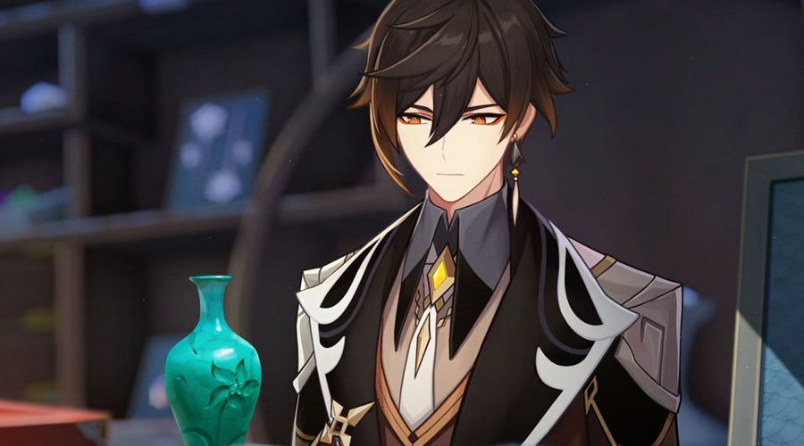
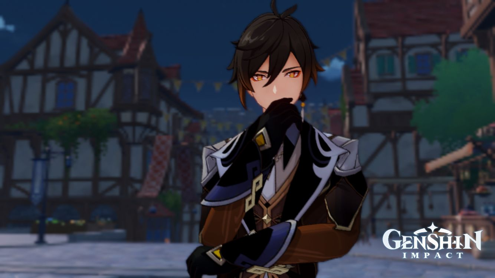

| "Таланты" | ||
| Тип | Название | Описание |
|---|---|---|
| Боевой навык - Обычная/Заряженная атака | Каменный дождь | Обычная атака: До шести ударов копьём. Заряженная атака: Выпад, вызывающий дождь из каменный копий, на который тратится определённое количество выносливости. Атака в паденииСтремительно падает на землю, атакуя всех врагов на пути. Приземлившись, наносит урон по площади. |
| Боевой навык - Элементальный навык | Власть над камнем | Каждая гора, каждый камень и вся земля пронизаны энергией Гео, но только единицы могут ею управлять. Быстрое нажатие: Приказывает силам земли создать каменную стелу. Долгое нажатие: Заставляет окружающие Гео энергии взорваться, что вызывает следующие эффекты: •Создаёт Каменную стелу, если не было достигнуто их максимально допустимое количество. •Создаёт Яшмовый щит. •Поглощение урона щита зависит от макс. HP Чжун Ли. • Наносит Гео урон по площади. •Если поблизости есть цели с элементом Гео, вытягивает большое количество Гео элемента из максимум 2 таких целей. Этот эффект не наносит урона. Каменная стела: •При создании наносит Гео урон по площади. •Также Каменная стела входит в резонанс с окружающими её Гео конструкциями, нанося Гео урон окружающим врагам. •Каменная стела считается Гео конструкцией, на неё можно взобраться или использовать её для блокирования атак. •Первоначально может существовать только одна Каменная стела, созданная самим Чжун Ли. Яшмовый щит: •Весь элементальный и физический урон поглощается на 150% эффективнее. •Персонажи, защищённые Яшмовым щитом, будут понижать элементальное и физическое сопротивление врагов в небольшом радиусе на 20%. Этот эффект не может складываться. |
| Боевой навык - Взрыв стихии | Падение кометы | Призывает гигантский метеорит, который наносит огромный Гео урон врагам в радиусе поражения, а также накладывает на них статус Окаменение. Окаменение: Враги со статусом Окаменение не могут двигаться. |
| Пассивный талант 1 | Каменная воля | УПолученный при активном Яшмовом щите урон накладывает статус Укрепление: •Увеличивает прочность щита персонажа, защищённого Яшмовым щитом, на 5%. •Может складываться до 5 раз, и длится до тех пор, пока не исчезнет Яшмовый щит.. |
| Пассивный талант 2 | Господство земли | Чжун Ли наносит дополнительный урон, который зависит от его макс. HP: •Урон обычной атаки, заряженной атаки и атаки в падении увеличен на 1.39% от макс. HP. •Урон Каменной стелы навыка Власть над камнем, её резонанса и долгого нажатия увеличен на 1.9% от макс. HP. •Урон навыка Падение кометы увеличен на 33% от макс. HP.. |
| Пассивный талант 3 | Кристальная судьба | При ковке древкового оружия возвращает 15% затраченной руды. |
| "Галерея" | |
|  |  |
| |